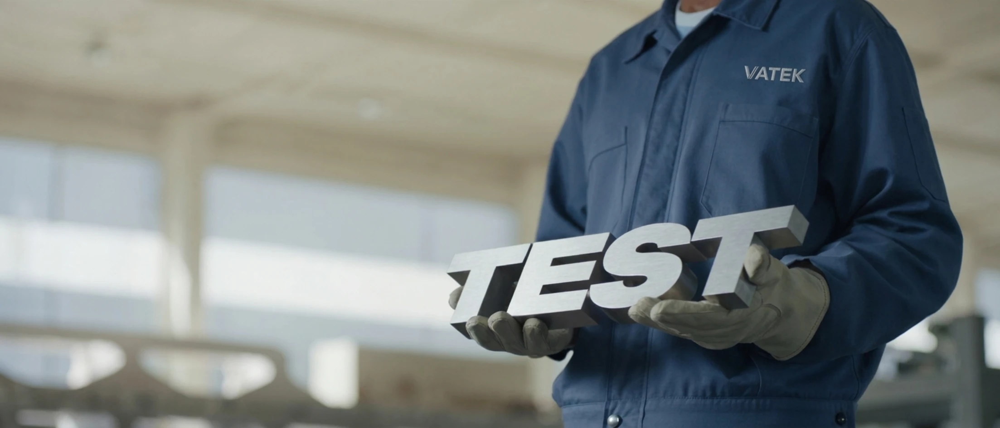
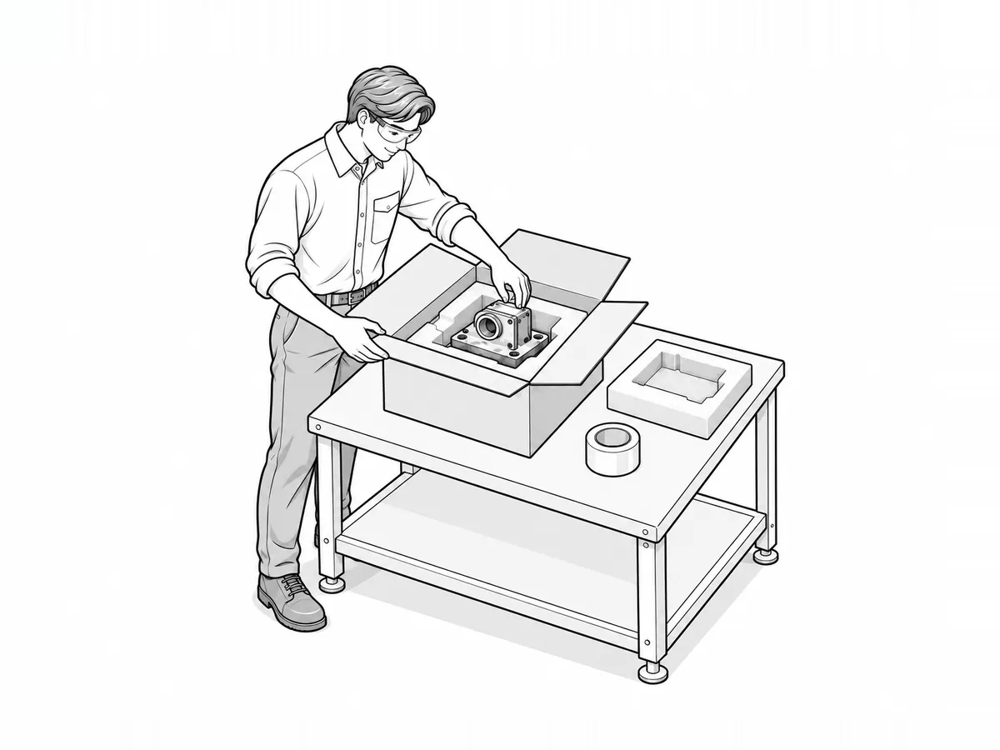
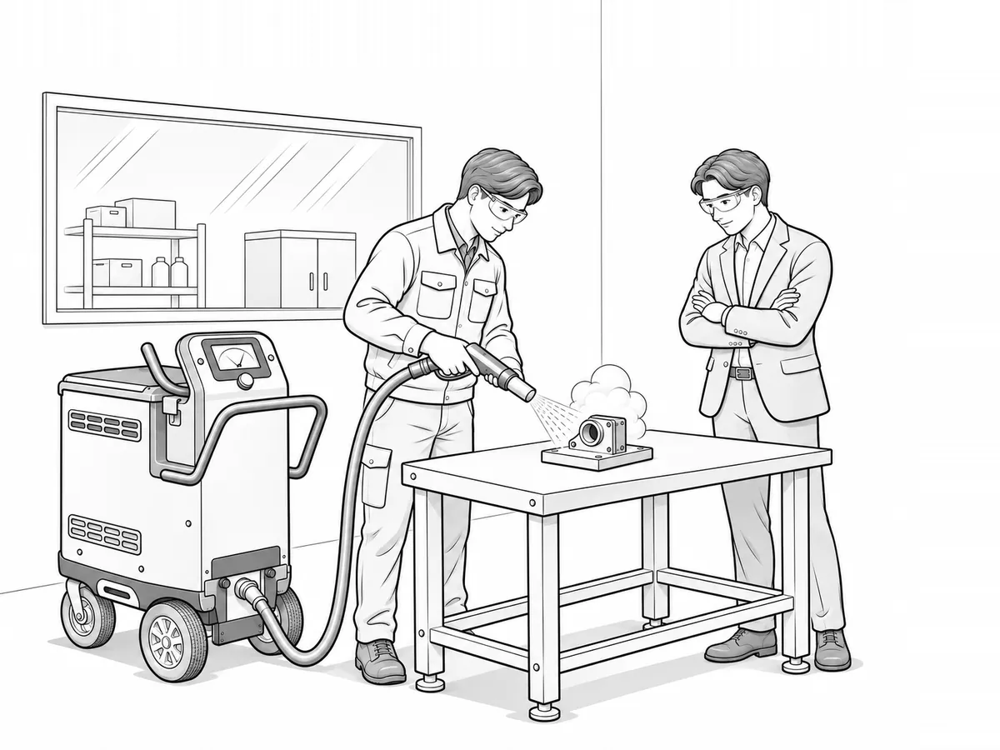
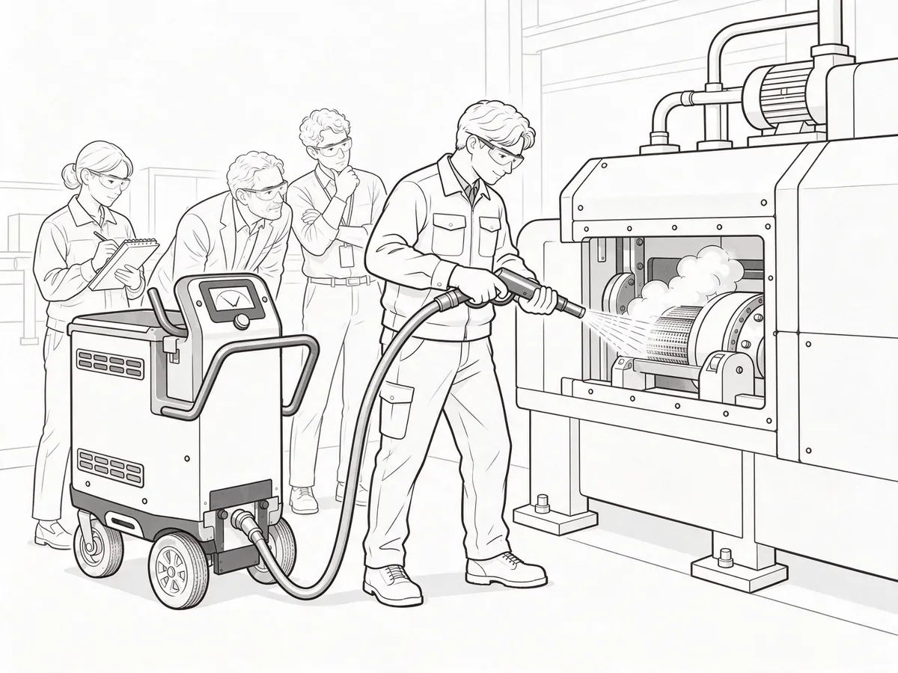
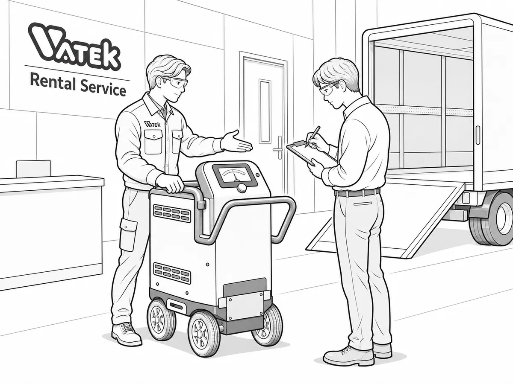
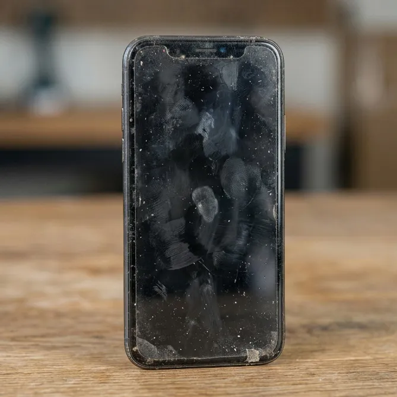
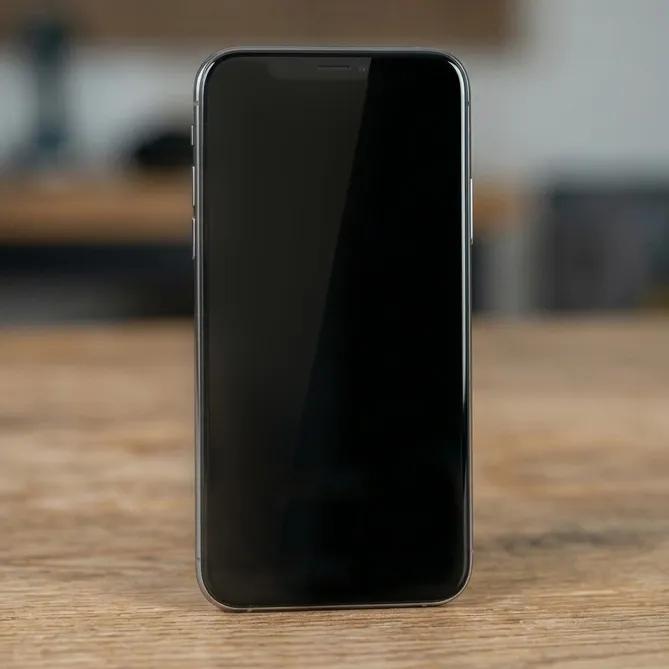

세척 대상과 오염 상태는 현장마다 다르기 때문에 장비 사양이나 설명만으로 실제 적용 가능성을 판단하기는 어렵습니다.
바테크는 실제 조건에 맞춰 드라이아이스 세척 테스트를 진행하고, 세척 결과와 함께 적합한 장비, 노즐 및 주요 작업 조건을 확인해 드립니다.
샘플 발송, 바테크 방문 또는 현장 테스트 등 상황에 맞는 방법으로 진행할 수 있습니다.
간단한 샘플은 택배로 보내주시면 가장 빠르게 테스트할 수 있습니다. 직접 세척 과정을 확인하고 싶다면 바테크 연구소를 방문할 수 있으며, 설비를 이동하기 어렵거나 실제 현장에서 확인해야 하는 경우에는 바테크가 장비를 가지고 방문합니다.
샘플 발송과 연구소 방문 테스트는 무료이며, 현장 방문 테스트는 거리와 일정, 작업 조건에 따라 비용이 발생합니다.

테스트할 샘플을 택배나 화물로 보내주시면 바테크 연구소에서 세척 테스트를 진행합니다. 테스트 결과는 세척 전후 사진과 주요 작업 조건을 정리해 안내해 드립니다.

샘플을 가지고 바테크 연구소를 방문해 직접 테스트 과정을 확인할 수 있습니다. 장비의 세정 성능과 작업 방법을 현장에서 확인하고, 필요한 경우 여러 조건을 비교해 볼 수 있습니다.

설비를 이동하기 어렵거나 실제 생산 현장에서의 세척 결과를 확인해야 하는 경우, 바테크가 장비를 준비해 현장을 방문합니다.
실제 설비와 작업 환경에서 테스트할 수 있어 장비 도입이나 적용 가능성을 가장 구체적으로 검토할 수 있는 방법입니다.

장비를 일정 기간 렌탈하면 실제 작업 현장에서 원하는 대상과 오염물을 직접 세척해 볼 수 있습니다. 한두 개의 샘플에 그치지 않고 여러 대상과 작업 조건을 비교하면서 장비의 세정 성능과 사용성을 충분히 확인할 수 있다는 것이 가장 큰 장점입니다.
실제 작업자가 장비를 직접 사용해 볼 수 있어 세정 결과뿐 아니라 작업 속도, 장비 조작, 노즐 선택 등 도입 후의 운용까지 함께 검토할 수 있습니다.
세 방법 모두 시작은 같습니다. 영업팀에 연락해 세척 대상과 오염 상태를 알려 주시면 적합한 장비와 노즐을 미리 준비합니다. 그 다음이 방법별로 달라집니다.
가장 빠르게 결과를 확인하는 방법입니다. 시료가 도착하면 연구소에서 세척 테스트를 진행하고, 결과물을 전후 사진 및 세척 영상과 함께 반송합니다. 현장 테스트 전에 세척 가능성을 먼저 확인하는 용도로도 좋습니다.
시료가 커서 택배가 어렵거나 세척 과정을 직접 보고 싶을 때 맞는 방법입니다. 연구소에서 함께 테스트하며 조건을 바꿔 보고, 결과를 그 자리에서 확인합니다. 장비를 직접 조작해 볼 수 있어 도입 후 운용 감각도 잡을 수 있습니다.
바테크 영업팀이 장비와 드라이아이스를 준비해 고객사 현장에서 직접 세척합니다. 실제 설비, 실제 오염, 실제 작업 환경에서 확인하는 가장 정확한 방법입니다. 방문 요청이 많아 일정 협의에 시간이 걸릴 수 있고, 거리와 시간에 따라 비용이 발생합니다.


BEFOREAFTER단순히 “잘 됩니다”라고 설명하는 데 그치지 않습니다. 세척 전후 상태와 실제 작업 과정을 확인할 수 있도록 사진과 영상, 사용 장비와 주요 테스트 조건을 함께 정리해 드립니다.
테스트 결과는 내부 검토나 장비 도입 여부를 판단하는 자료로 활용할 수 있으며, 실제 현장에 적용할 경우 참고할 장비와 작업 조건도 함께 안내합니다.
※ 테스트 결과와 관련 자료는 고객사 검토용으로 제공하며, 고객의 동의 없이 세척영상 또는 이미지 등을 온라인 등 외부에 공개하지 않습니다.
데모 테스트를 준비할 때 자주 문의하시는 내용을 정리했습니다. 이외의 사항은 언제든 바테크 영업팀에 문의해 주세요.
가능하면 실제 현장에서 사용하는 상태 그대로 보내주세요. 세척하거나 오염물을 일부 제거한 상태로 보내면 실제 작업 조건과 다른 결과가 나올 수 있습니다.
여러 세정 조건을 비교하고 싶다면 동일한 오염 상태의 부분을 두 곳 이상 남겨 보내주시면 테스트 조건을 달리해 비교하는 데 도움이 됩니다.
아닙니다. 샘플 발송과 바테크 연구소 방문 테스트는 장비 구매 여부와 관계없이 진행할 수 있습니다.
테스트 결과가 기대와 다르거나 드라이아이스 세척이 적합하지 않은 경우에도 결과를 그대로 안내해 드립니다. 필요한 경우 다른 방법이나 적용 조건도 함께 검토합니다.
현장 방문 테스트는 이동 거리와 예상 작업시간, 필요한 장비와 드라이아이스 수량 등을 기준으로 견적을 안내합니다.
현장 조건과 테스트 범위를 먼저 확인한 뒤 비용과 일정을 협의하며, 이후 장비 구매나 렌탈을 검토하는 경우에는 관련 조건도 함께 안내해 드립니다.
데모 테스트는 특정 대상에 드라이아이스 세척이 가능한지와 세척 결과를 확인하는 비교적 짧은 테스트입니다.
렌탈은 장비를 일정 기간 직접 사용하면서 여러 대상과 오염물을 자유롭게 테스트할 수 있다는 점이 다릅니다. 실제 작업자가 장비를 운용해 세정 성능뿐 아니라 작업시간, 사용 편의성, 노즐과 작업 조건까지 충분히 확인하고 싶다면 렌탈이 더 적합할 수 있습니다.
샘플 발송 테스트의 경우 세척 전후 상태와 주요 테스트 조건을 확인할 수 있도록 결과를 정리해 안내합니다.
연구소 방문이나 현장 테스트에서는 세척 과정을 직접 확인하면서 장비와 노즐, 분사 조건에 따른 차이도 함께 살펴볼 수 있습니다.
간단한 샘플을 보낼 수 있다면 샘플 발송이 가장 편리합니다. 세척 과정을 직접 확인하고 싶다면 바테크 연구소 방문을, 설비를 이동하기 어렵거나 실제 생산 환경에서 확인해야 한다면 현장 방문 테스트를 권장합니다.
여러 종류의 대상과 오염물을 충분히 테스트하거나 실제 작업자가 일정 기간 장비를 사용해 보고 싶다면 렌탈을 이용하는 방법도 있습니다.
테스트 대상과 원하는 방법을 먼저 알려주시면 샘플 수령 일정이나 연구소 방문 가능 일정, 현장 방문 일정을 확인해 안내합니다.
테스트 내용과 준비해야 할 장비에 따라 일정이 달라질 수 있으므로, 원하는 날짜가 있다면 미리 문의해 주세요.
세척 대상과 오염 상태, 시료의 크기와 작업 조건을 알려주시면 적합한 테스트 방법과 장비를 안내해 드립니다. 샘플 발송과 바테크 연구소 방문 테스트는 무료로 진행할 수 있습니다.
테스트 결과를 확인한 뒤 장비 구매나 렌탈, 추가 검토 여부를 결정하시면 됩니다. 여러 대상과 조건을 충분히 확인하고 싶다면 V RENTAL을 통해 실제 현장에서 장비를 직접 사용해 볼 수도 있습니다.
바테크는 Cold Jet 대한민국 공식 대리점으로 테스트부터 렌탈, 장비 구매, 교육과 A/S까지 국내에서 지원합니다.